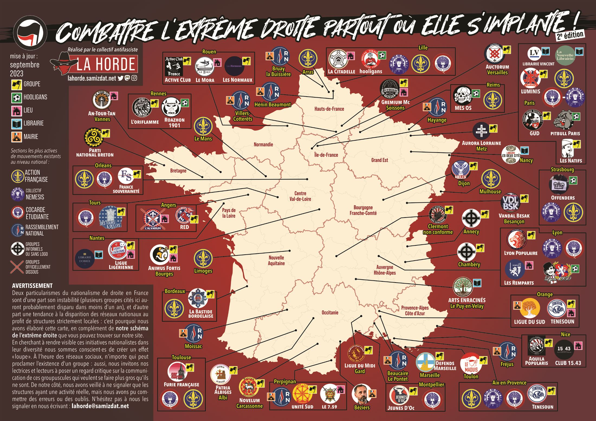

Le nationalisme de droite en France a deux particularités, explique La Horde : son instabilité (beaucoup de groupes disparaissent en moins d'un an) et le recul des réseaux nationaux au profit de structures strictement locales. D'où cette carte, réalisée avec les collectifs antifascistes de chaque région, en complément du schéma de l'extrême droite. Elle est reproduite ici avec l'accord de La Horde.

Avant de lire
- Effet loupe : rendre visibles ces groupes peut les faire paraître plus forts qu'ils ne sont. À l'heure des réseaux sociaux, n'importe qui peut annoncer un groupe ; regarde leur communication d'un œil critique.
- Activité réelle : seules les structures réellement actives ont été retenues, mais il peut y avoir des erreurs ou des oublis. On peut les signaler à La Horde.
- Légende : drapeau jaune = groupe ; ballon = hooligans ; maison rose = lieu ; livre bleu = librairie ; mairie orange = ville dirigée par l'extrême droite ; croix rouge = groupe officiellement dissous.
- Mouvements nationaux : leurs sections locales les plus actives sont signalées par leur logo : Action française, Nemesis, Cocarde étudiante, Rassemblement national.
Ville par ville
| Ville ou secteur | Ce que montre la carte |
|---|---|
| Paris et région | GUD, Les Natifs, Luminis, Pitbull Paris (hooligans), Action française, Cocarde, Nemesis, deux librairies ; Auctorum à Versailles ; Gremium MC (lieu) à Soissons. |
| Lille et Nord | La Citadelle (lieu), hooligans, Nemesis, Action française, Cocarde ; Action française à Arras ; mairies RN à Hénin-Beaumont et Bruay-la-Buissière. |
| Picardie, Grand Est | Mairies RN à Villers-Cotterêts et Hayange ; MES OS (hooligans) et Action française à Reims ; Aurora Lorraine à Metz ; librairie à Nancy ; Offenders (hooligans), Nemesis et Action française à Strasbourg ; Action française à Mulhouse. |
| Normandie | À Rouen : Active Club, Le Mora (lieu), Les Normaux. |
| Bretagne | L'Oriflamme et Roazhon 1901 (hooligans) à Rennes ; An-Tour-Tan (lieu) à Vannes ; Parti national breton. |
| Pays de la Loire, Centre | Ligue ligérienne (lieu) et une librairie à Nantes ; RED et L'Alvarium (dissous) à Angers ; Action française au Mans ; Action française, Cocarde et France Souveraineté à Orléans ; Cocarde et Des Tours & des Lys à Tours ; Animus Fortis (lieu) à Bourges. |
| Nouvelle-Aquitaine | Action française et La Bastide bordelaise à Bordeaux ; Action française à Limoges. |
| Bourgogne-Franche-Comté | Helix à Dijon ; Vandal Besak à Besançon. |
| Auvergne-Rhône-Alpes | À Lyon : Lyon populaire, Les Remparts (lieu), Nemesis, Cocarde, Lyon 1950 (hooligans) ; Clermont non conforme ; groupes informels à Annecy et Chambéry ; Arts enracinés (librairie) au Puy-en-Velay. |
| Occitanie | Furie française, Cocarde et Action française à Toulouse ; Patria Albiges à Albi ; Novelum à Carcassonne ; Jeunes d'Oc et Cocarde à Montpellier ; Ligue du Midi dans le Gard ; à Perpignan, mairie RN, Unité Sud et Le 7.59 (lieu) ; mairies d'extrême droite à Béziers, Moissac et Beaucaire. |
| Provence-Côte d'Azur | Defends Marseille ; Le Maquis à Toulon ; Action française, Nemesis, Cocarde et Tenesoun à Aix-en-Provence ; Ligue du Sud (mairie) et Tenesoun à Orange ; Aquila Popularis et Club 15.43 (lieu) à Nice ; mairies RN à Fréjus et au Pontet. |
Cette carte date de septembre 2023 : certains groupes ont pu disparaître ou changer de nom depuis.
Que faire de ces informations ?
- Se rapprocher du collectif antifasciste local : ils sont sur la carte de Mamie.
- Ne pas faire de publicité gratuite à un groupe qui existe surtout sur les réseaux.
- Rester prudent·e près des lieux signalés, et ne jamais y aller seul·e.
Fiche rédigée par Mamie Commune d'après les ressources publiées par le site antifasciste La Horde. Les originaux (schéma, carte, livre) sont disponibles sur leur site.